SEANET 2001

Kota Kinabalu Malaysia
09.Nov-11.Nov.2001
29th annual SEANET Convention
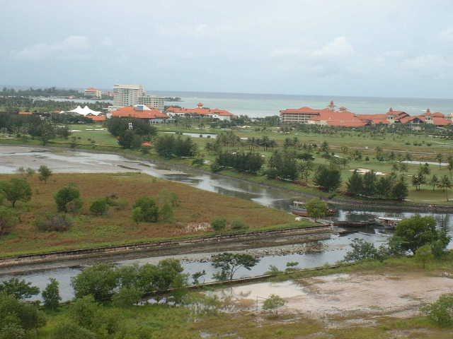
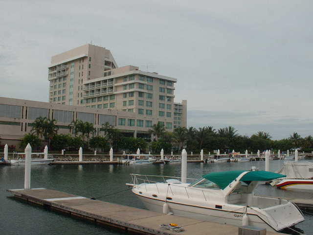
SEANET Convention 2001の会場となったThe Pacifioc Sutera Hotel


|
◎ SEANET CONVENTION 2001
2001年11月9日から11日の3日間、マレーシアのコタ・キナバルで第29回SEANET Conventionが開催された。
各国持ち回りのSEANET・Conventionがマレーシアで開催されるのは、1971年にPenang(Malaysia)での第1回以降、
5、9、14、18、22回に続き7回目となるが、コタ・キナバルで開催されるのは今回が初めて。 ◎ SEANET PROGRAMs
9th November 2001(Friday)
09:00-19:00 Registration.
19:00-21:00 Welcome Dinner.
10th November 2001(Saturday)
08:30-09:00 Group Photograph infront of the marina. Sutera Harbour.
09:00-12:00 Tentative route:Sabah Muzium,Monsopiad Cultural Village.
12:00-13:30 Lunch at Langkah Syaboa Resort,Kinarut.
13:30-16:00 Kinarut Earth Satelite Station,Pottery Factry,City tour,Sea Front,
Sinsuran Handicraft Centre.
18:30-23:30 Gala Dinner
11th November 2001(Sunday)
08:30-08:40 Opening Remarks by Encik Rashid Sultan 9M2RS
MARTS past presidents
08:40-09:40 Technical Presentations:
COMOROS DX-pedition by Arakawa JA3AER & Kazuo JA1RJU.
09:40-10:00 Coffee Break
10:30-12:00 Plenary Session.
12:00 Lunch & Farewell.
|
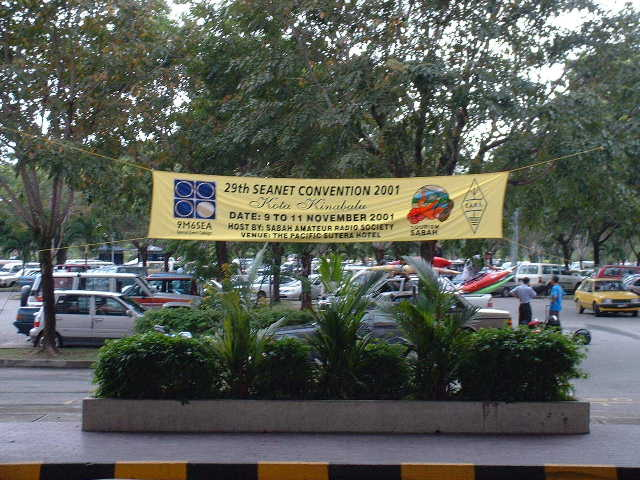
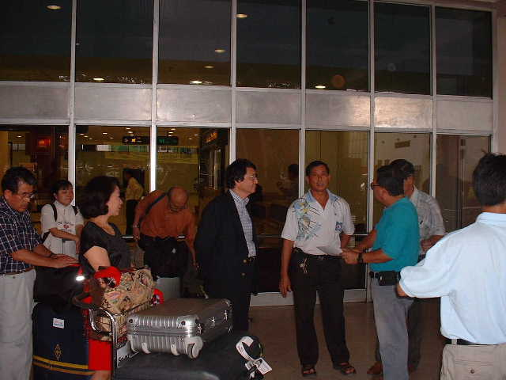
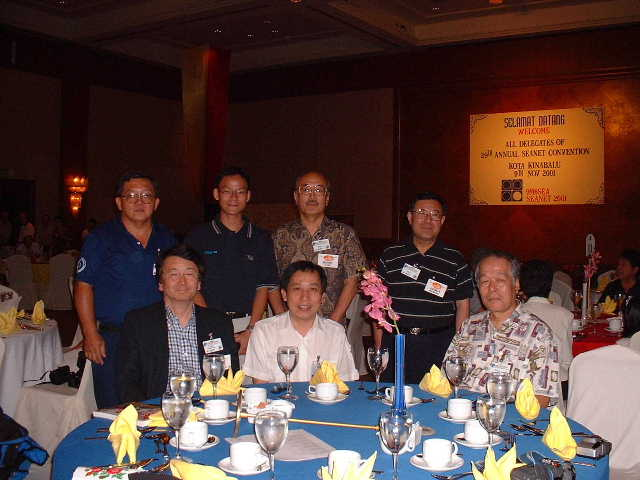
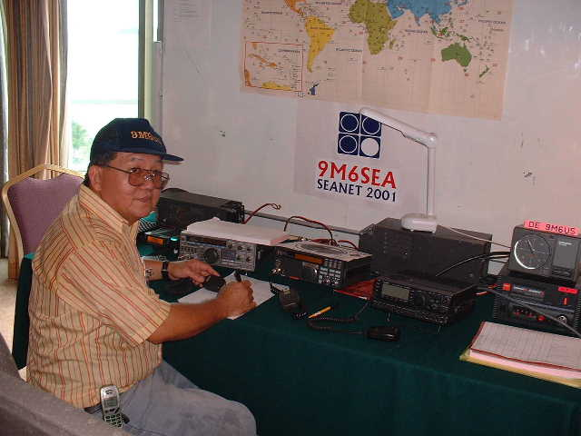
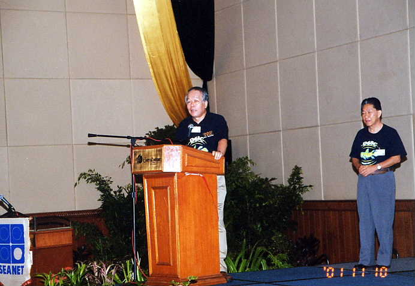
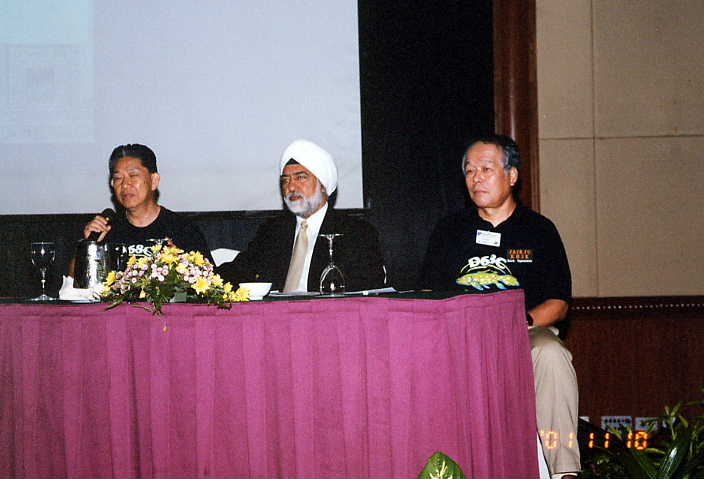
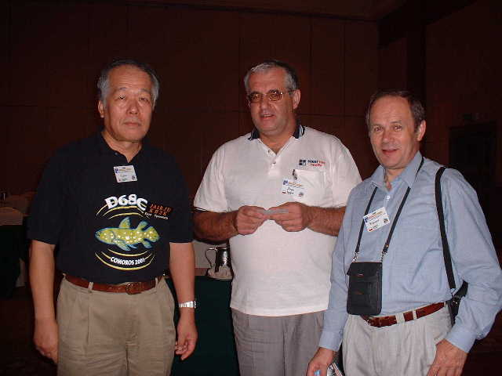
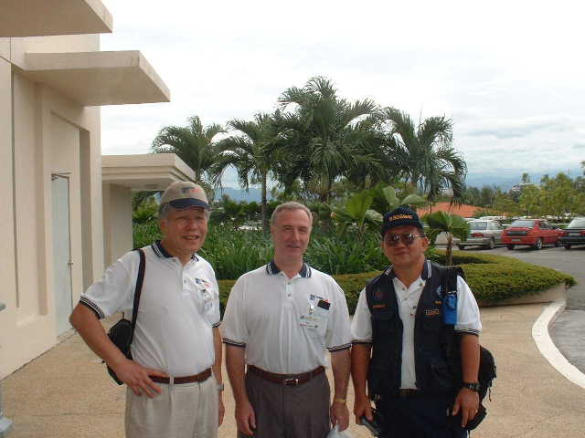
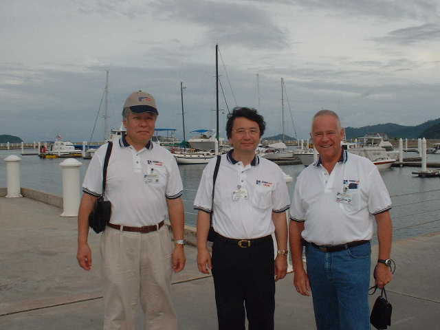
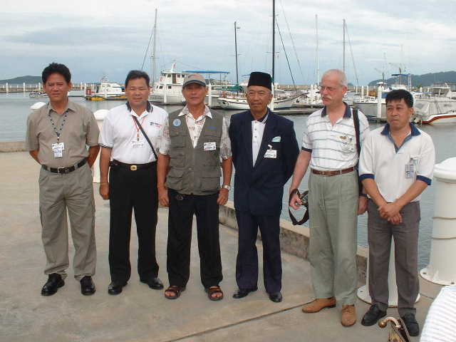
|
◎ GALA DINNER
11月10日(土)のメインセレモニー/Gala Dinnerでは、冒頭、2001年4月21日に亡くなったSEANETのNet Controlなどで活躍したV85HG・Haji Hassanに弔意を表すため、
全員で1分間の黙とうを捧げた。 |
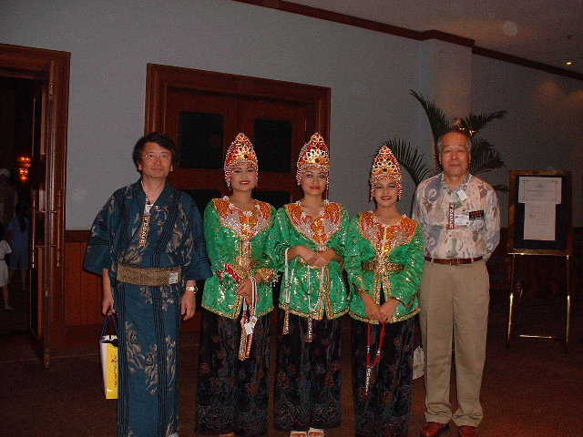
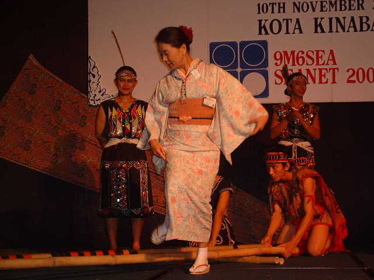
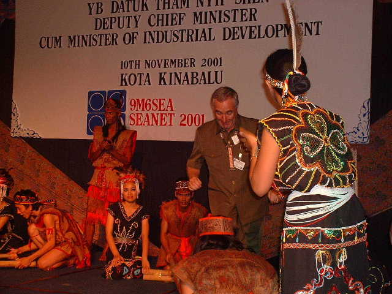
 |
9M6からの運用 |